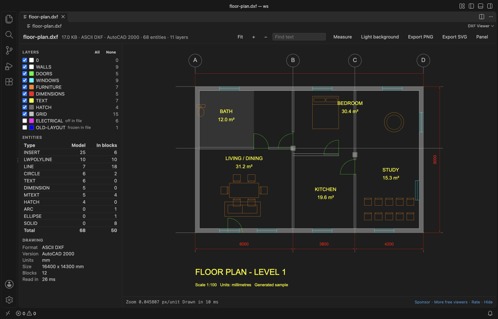

DXF para CSV no VS Code: extraia atributos de bloco e textos
Instale o DXF Viewer & File Preview for 2D CAD Drawings (zovo.dxf-viewer) e clique no arquivo .dxf para ver as pranchas, os layers e os textos. A visualização, os layers, a busca de texto, a medição e a exportação em PNG ou SVG são grátis. O Extract drawing data é uma ferramenta do Zovo Pro que salva um CSV com atributos de bloco (uma linha por inserção, uma coluna por tag), contagem de blocos, todos os textos com layer e posição, ou a lista de layers. Ela tem 3 usos grátis no seu computador, e depois o Zovo Pro custa 19 USD, pagos uma vez, para todas as extensões Zovo.
Grátis, licença MIT. ID da extensão zovo.dxf-viewer, versão 0.3.2.
Este guia também está em English · Français · Italiano · Polski · 简体中文

Passo a passo no VS Code
- Instale o DXF Viewer pelo Marketplace, ou aperte Ctrl+P (Cmd+P no macOS) e rode
ext install zovo.dxf-viewer. - Clique no arquivo
.dxfno Explorer. O painel lateral lista os layers com a cor e a contagem de entidades, uma tabela de tipos de entidade (no model space e dentro dos blocos) e os dados do desenho, inclusive o número de blocos. - Aperte Ctrl+F (Cmd+F no Mac) e digite um número de tag ou o valor de um atributo para conferir se o dado está no desenho. Enter vai para a próxima ocorrência.
- Rode "DXF Viewer: Extract Block Attributes, Text or Layers to CSV (Zovo Pro)" pela Command Palette ou pelo menu
...do desenho aberto. Você também pode clicar com o botão direito no arquivo.dxfno Explorer e escolher "Zovo Pro: Extract drawing data to CSV". - Na lista "What should the CSV file hold?", escolha Block attributes, Block counts, All text ou Layers.
- Escolha um nome de arquivo na janela de salvar. Uma mensagem mostra quantas linhas foram salvas. Abra o CSV no Excel ou no Google Sheets.
O que é grátis e o que o Zovo Pro acrescenta
Abrir arquivos DXF é grátis e continua grátis, com as pranchas do paper space, os layers, a busca de texto, a medição, a recarga ao vivo e a exportação em PNG ou SVG. O painel lateral com layers, tipos de entidade e dados do desenho também é grátis.
O Extract drawing data salva os dados do desenho que você copiaria à mão para uma planilha. São atributos de bloco com uma linha por inserção e uma coluna por tag (como uma tabela de portas ou de equipamentos), contagem de blocos como lista de materiais, todos os textos com layer e posição, ou a lista de layers. Ele funciona em um desenho ou em todos os arquivos .dxf de uma pasta e das subpastas, e com vários desenhos o CSV ganha uma coluna File. Ele só lê os arquivos no seu computador e nunca grava em um desenho.
Como usar Extract drawing data (Zovo Pro)
- Para um desenho, abra o arquivo
.dxfe rode "DXF Viewer: Extract Block Attributes, Text or Layers to CSV (Zovo Pro)" pela Command Palette, ou clique em "Extract drawing data to CSV" na pequena linha Zovo Pro no topo do visualizador. - Para uma pasta, clique com o botão direito na pasta no Explorer e escolha "Extract Block Attributes, Text or Layers to CSV (Zovo Pro)". Todos os arquivos
.dxfda pasta e das subpastas são lidos. - Escolha o conteúdo do CSV e salve o arquivo. Um uso só conta quando o arquivo CSV é salvo, então Cancel ou Escape não gastam nada.
- Depois dos 3 usos grátis, a ferramenta mostra as formas de obter o Zovo Pro.
Extract drawing data funciona 3 vezes no seu computador antes de pedir uma licença. Não há janela pop-up nem contagem regressiva.
O Zovo Pro custa 19 USD, pagos uma vez só. Não é assinatura, e a licença libera as ferramentas Pro em todas as extensões Zovo, não só no DXF Viewer. Depois do pagamento com cartão (Stripe), a chave de licença aparece na página seguinte. No VS Code, rode "Zovo Pro: Enter Zovo Pro license key" pela Command Palette e cole a chave. A chave é conferida no seu computador, sem acesso à rede. Pelo GitHub Sponsors, escolha o nível "$19 one time" e depois rode "Zovo Pro: I already paid: unlock with GitHub Sponsors".
Uma equipe de 5 pessoas paga 59 USD uma vez só (com cartão). Todas as regras e ferramentas Pro estão na página do Zovo Pro (em inglês).
Passo a passo no Cursor, Windsurf ou VSCodium
- Abra a visão Extensions com Ctrl+Shift+X (Cmd+Shift+X no macOS).
- Busque
zovo.dxf-viewere clique em Install. Cursor, Windsurf e VSCodium instalam extensões do Open VSX, onde esta se chamazovo/dxf-viewer. - Se o seu editor não tiver galeria, baixe o arquivo .vsix na página do Open VSX e rode "Extensions: Install from VSIX...".
- Depois disso, tudo funciona como no VS Code.
O que o DXF Viewer faz
- Atributos de bloco, com uma linha por inserção de bloco com Block, Layer, X, Y, Rotation, Space e Handle, e depois uma coluna por tag de atributo.
- Contagem de blocos, com quantas vezes cada bloco é inserido, no model space e no paper space, com os layers e as tags de atributo.
- Todos os textos, com TEXT, MTEXT, atributos e valores de cota, com tipo, layer, X, Y, altura, bloco e tag.
- Layers, com contagem de entidades, cor (ACI), ligado ou desligado e estado congelado.
- DXF ASCII e binário, do R12 a arquivos do AutoCAD 2018, com blocos e inserções aninhadas.
O que ele não faz
- DWG não é suportado. Quando você clica em um arquivo
.dwg, a extensão mostra uma página com a versão do DWG e como salvar uma cópia em DXF. O ODA File Converter, que é grátis, converte uma pasta inteira de arquivos DWG de uma vez. - O CSV traz atributos de bloco, contagem de blocos, textos ou layers. Ele não é uma lista das coordenadas de todas as linhas e polilinhas.
- Arquivos acima de 500 MB não são lidos (configuração
dxfViewer.maxFileMB, até 2048). - Uma execução em pasta lê no máximo 5.000 desenhos e pula as pastas
node_modules,.git,.svne.hg. - O visualizador é somente leitura. A janela de salvar recusa nomes de arquivo que terminam em
.dxfou.dwg, então um desenho nunca é sobrescrito.
Perguntas frequentes
É grátis?
Ver arquivos DXF, os layers, as pranchas, a busca de texto, a medição e a exportação em PNG ou SVG são grátis. Extract drawing data, Compare drawings e Folder inventory são ferramentas do Zovo Pro. Cada ferramenta Pro tem 3 usos grátis no seu computador, e depois o Zovo Pro custa 19 USD, pagos uma vez, para todas as extensões Zovo.
Dá para extrair atributos de um arquivo DWG?
Não diretamente. DWG não é suportado. Salve uma cópia em DXF no seu programa de CAD, ou converta os arquivos DWG com o ODA File Converter, que é grátis, e depois abra o DXF.
O Excel vai mostrar acentos e fórmulas do jeito certo?
O CSV começa com uma marca de ordem de bytes UTF-8, então o Excel lê texto acentuado e em outros alfabetos. Uma célula que começa com =, +, - ou @ ganha um apóstrofo no início, para o Excel não rodar o conteúdo como fórmula.
Funciona no Cursor?
Sim. A extensão está publicada no Open VSX como zovo/dxf-viewer, então ela instala no Cursor, no Windsurf e no VSCodium.
Saiba mais
O guia em inglês traz mais detalhes e outras opções. Cada recurso e configuração está na página do DXF Viewer (em inglês).
Informações conferidas em 12 de novembro de 2026 na versão atual do Marketplace.